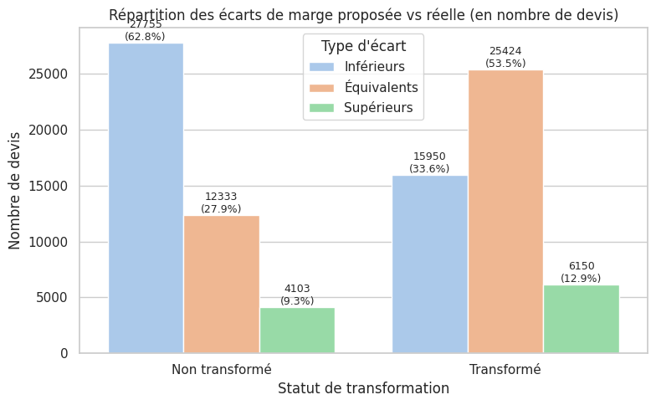

Pricing
and prediction.
This project explored historical quote data to estimate conversion. The report documents data preparation, feature engineering, modelling iterations and analysis of results.
Turn history into
a useful signal.
The project explored prediction at quote-line and quote level, combining historical variables with business information. The goal was to support analysis and prioritisation by business teams.
Scores vary
by category.
Each plotted point represents an anonymised category from the report table. The chart plots F1 against AUC; hover a point for detail.
Scores by anonymised category
Source: “Section / n / Acc / F1 / AUC” table in the Pricing report. F1 and AUC values are reproduced; category names and volumes are omitted. Medians are calculated from the table rows.
Explore the pricing logic.
The report combines customer margin and conversion, business rules and pricing-action scenarios.



Prepare, compare
and communicate.
The workflow examined historical splits, quote-level aggregates such as mean and median net amount, model metrics and category-level performance. Visuals made the relationship between pricing choices and business outcomes easier to discuss.